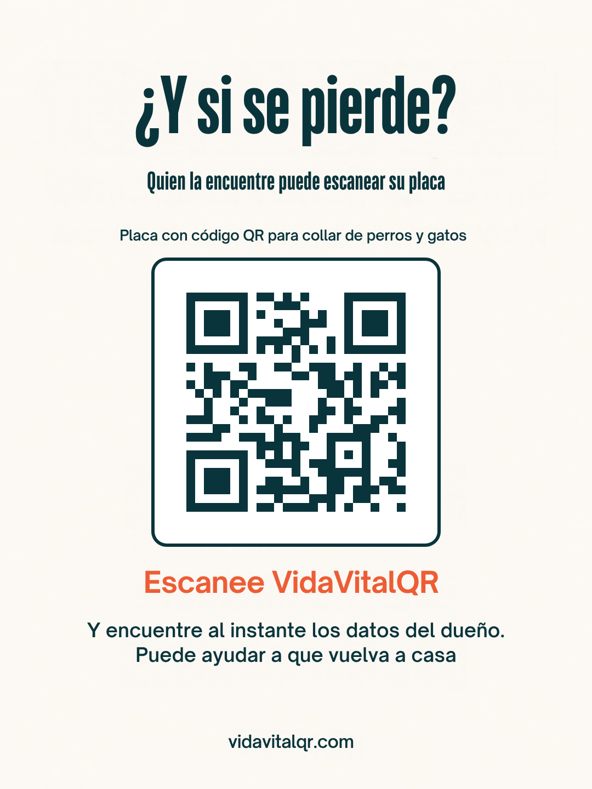
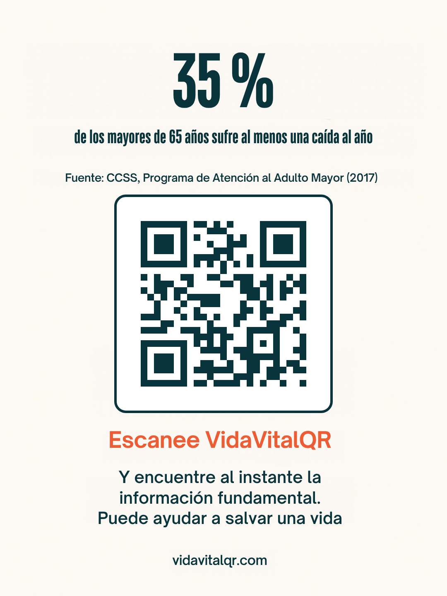
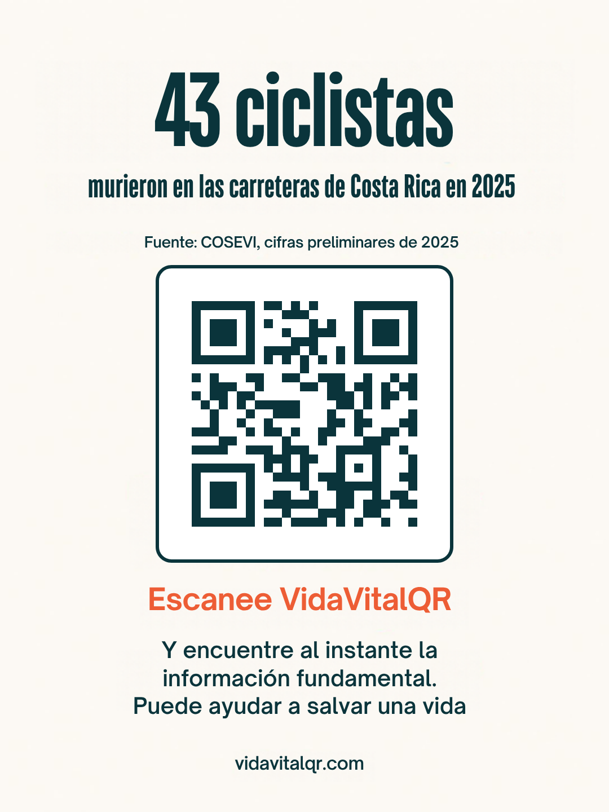

Un acompañante para los suyos
Una página animada: escanee el código, vea la información esencial y contacte a quien deba avisar. Para sus hijos, sus seres queridos y sus mascotas.
Aquí reunimos las publicaciones de VidaVitalQR: cifras con su fuente, ideas de prevención y los videos que compartimos en Instagram y Facebook, para personas, mascotas y objetos.
Una página animada: escanee el código, vea la información esencial y contacte a quien deba avisar. Para sus hijos, sus seres queridos y sus mascotas.

Quien la encuentre puede escanear la placa con código QR del collar y ver al instante los datos de la mascota, los datos del dueño y cómo llamarle. Puede ayudar a que vuelva a casa.

Una caída puede ocurrir en cualquier momento, y tener a mano la información fundamental de la persona ayuda a quien la asiste. Con VidaVitalQR basta escanear el código para encontrarla al instante.

Escanee el código QR y encuentre al instante la información fundamental. Puede ayudar a salvar una vida.
VidaVitalQR genera un código QR con la información esencial de una persona, una mascota o un objeto, disponible cuando más se necesita.
Conozca VidaVitalQR